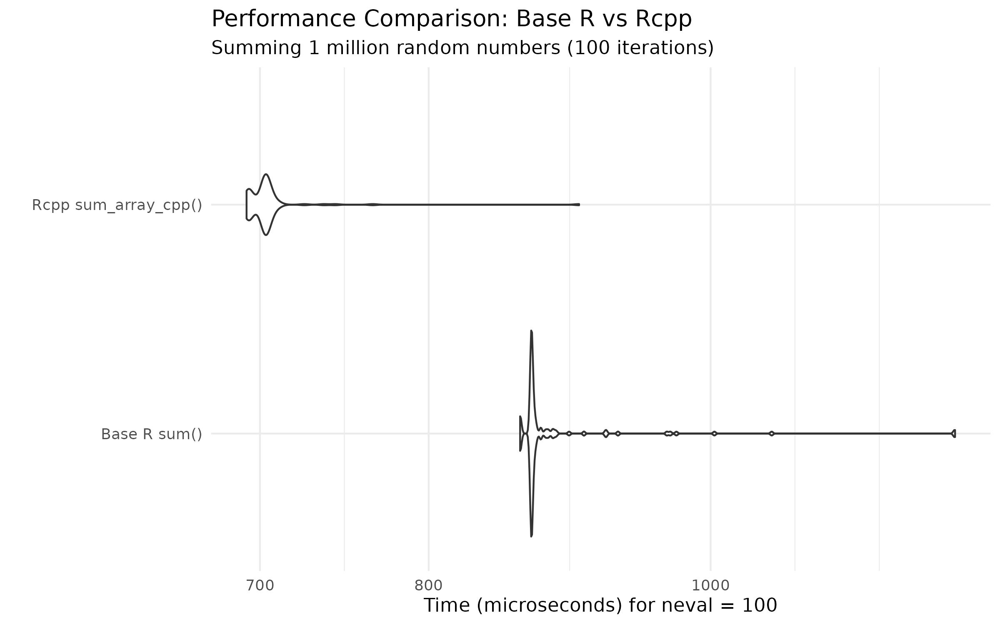

Introduction
This vignette demonstrates the two main functions in
templateRpackage:
-
add()- A simple R function to add two numbers -
sum_array_cpp()- An Rcpp function to sum a numeric vector using loop unrolling
box::use(templateRpackage[ add, sum_array_cpp ])Using the add() function
The add() function is a simple R function that adds two
numbers:
Using the sum_array_cpp() function
The sum_array_cpp() function sums a numeric vector using
C++ with loop unrolling for performance:
sum_array_cpp(1:10)
#> [1] 55
sum_array_cpp(c(1.5, 2.5, 3.5))
#> [1] 7.5
# Works with larger vectors
x <- rnorm(1000)
sum_array_cpp(x)
#> [1] 4.339615Benchmarking: Rcpp vs Base R
Let’s compare the performance of sum_array_cpp() against
base R’s sum():
box::use(microbenchmark[ microbenchmark ])
box::use(ggplot2[ autoplot, labs, theme_minimal ])
# Create test vectors of different sizes
set.seed(42)
small <- rnorm(1e3)
medium <- rnorm(1e5)
large <- rnorm(1e6)
# Benchmark with a large vector
mb <- microbenchmark(
"Base R sum()" = sum(large),
"Rcpp sum_array_cpp()" = sum_array_cpp(large),
times = 100
)
print(mb)
#> Unit: microseconds
#> expr min lq mean median uq max
#> Base R sum() 1861.906 1870.742 1873.8565 1872.670 1875.626 1912.691
#> Rcpp sum_array_cpp() 929.555 939.403 942.0178 940.125 942.314 962.697
#> neval
#> 100
#> 100
autoplot(mb) +
labs(
title = "Performance Comparison: Base R vs Rcpp",
subtitle = "Summing 1 million random numbers (100 iterations)"
) +
theme_minimal()
Verify correctness
Both functions should return the same result:
all.equal(sum(large), sum_array_cpp(large))
#> [1] TRUE